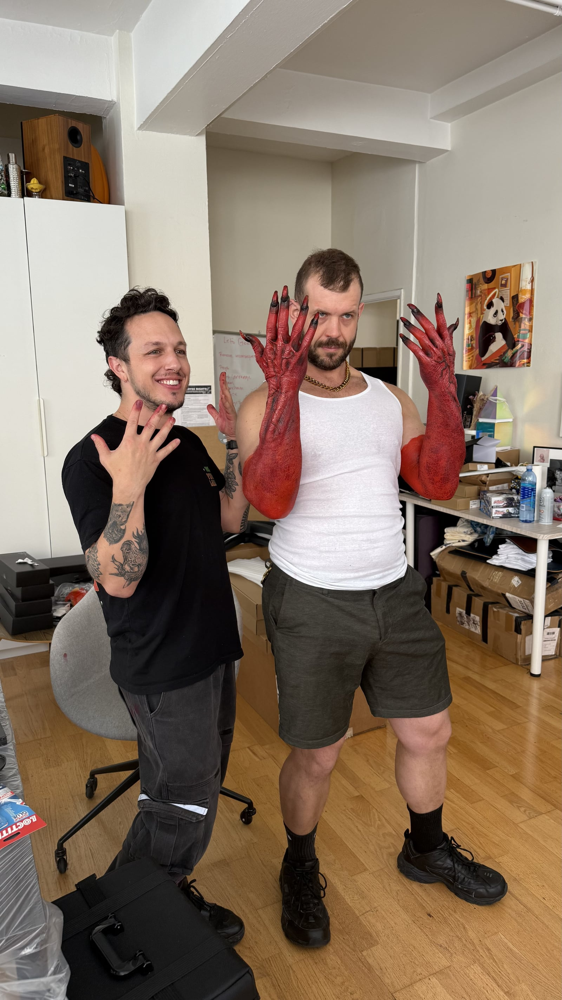
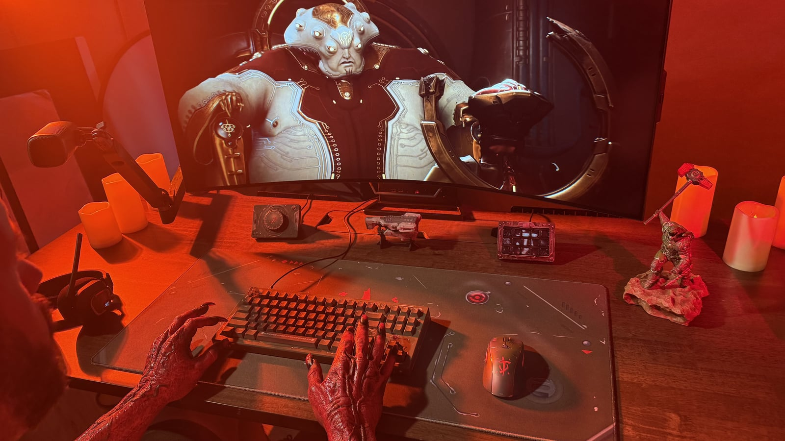
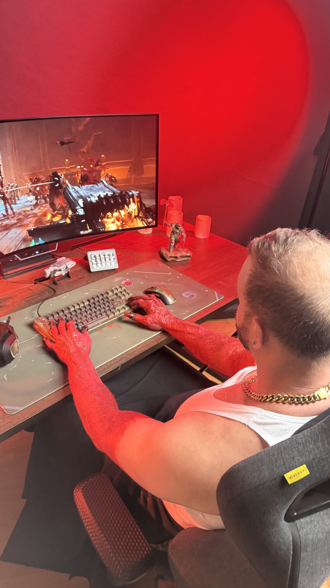
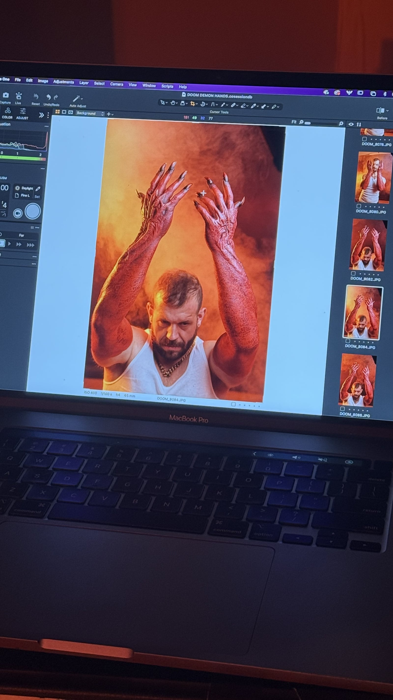
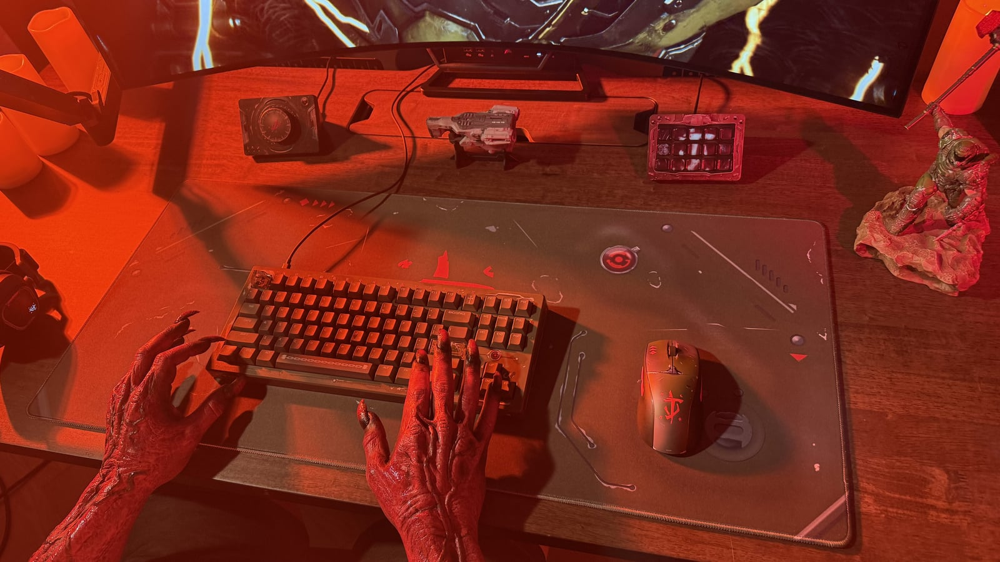

DOOM
Created for Bethesda's DOOM: The Dark Ages. As a longtime fan, I wanted the piece to feel grounded in the same gritty, practical energy that defined the DOOM work I grew up watching. The product and the game needed to reinforce each other — not compete.
The concept was simple: what would happen if a demon discovered a gaming setup? The piece became a creature-driven film where a faceless demon interacts with the products in a way that feels unnatural, curious, and slightly unsettling.
DOOM already has a strong visual identity. The challenge wasn't making something intense — it was making something that felt authentic to the world. The creature needed to feel like it existed in the DOOM universe first and a marketing campaign second.
Rather than a polished commercial character, the goal was something primitive and unpredictable — a faceless creature that interacts with objects in a way that's intelligent enough to be curious but strange enough to feel inhuman. The audience should never completely understand what it's thinking. That ambiguity is what makes it real.
Practical Creature Work
This project marked my first collaboration with a dedicated makeup artist and my first creature-focused production. The demon hands became the primary storytelling tool: physical, textured, strange, and present in the room rather than digitally constructed after the fact.

Creature Performance
A bodybuilder was cast for physical presence. Direction focused heavily on hand movement, posture, and unnatural behavior. References ranged from horror creature work to Michael Jackson's Thriller — movement that feels intelligent but inhuman.
Makeup & Practical Effects
First collaboration with a dedicated makeup artist. The creature design became the primary storytelling tool. Every texture needed to exist in the room — nothing digitally constructed. Practical effects over visual shortcuts.
Lighting & Visual Language
Red gel lighting, macro photography, sand, debris, and haze. Environmental detail created a world that felt physically grounded. DOOM's world should look like something is perpetually burning.
Music & Production
Heavy music established as creative identity early — not added after the fact. This production was also a milestone: first multi-department coordination with talent, makeup, and photography under a unified creative vision.

Directing The Demon
The performance was built through small physical choices: hand tension, posture, hesitation, and unnatural curiosity. The creature needed to feel intelligent enough to explore the setup, but strange enough that the audience never fully understands what it is thinking.

The project translated the visual identity of DOOM into a practical production environment while supporting the campaign's product goals. More importantly, it was a creative milestone — the first larger-scale production involving creature direction, practical effects, and coordinated department work. A creative foundation that continues to shape how future productions are approached.

